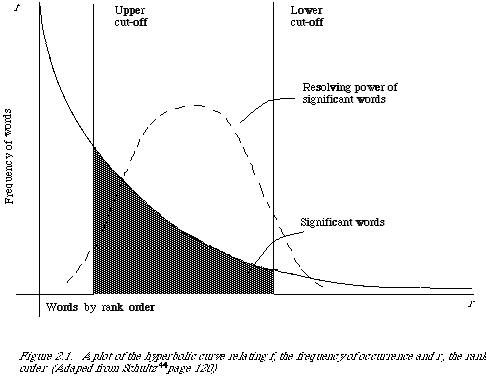
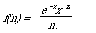
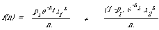
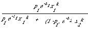

AUTOMATIC TEXT ANALYSIS
Introduction
Before a computerised information retrieval system can actually operate to retrieve some information, that information must have already been stored inside the computer. Originally it will usually have been in the form od documents. The computer, however, is not likely to have stored the complete text of each document in the natural language in which it was writtten. It will have, instead, a document representative which may have been produced from the documents either manually or automatically.
The starting point of the text analysis process may be the complete document text, an abstract, the title only, or perhaps a list of words only. From it the process must produce a document representative in a form which the computer can handle.
The developments and advances in the process of representation have been reviewed every year by the appropriate chapters of Cuadra's Annual Review of Information Science and Technology*. The reader is referred to them for extensive references. The emphasis in this Chapter is on the statistical (a word used loosely here: it usually simply implies counting) rather than linguistic approaches to automatic text analysis. The reasons for this emphasis are varied. Firstly, there is the limit on space. Were I to attempt a discussion of semantic and syntactic methods applicable to automatic text analysis, it would probably fill another book. Luckily such a book has recently been written by Sparck Jones and Kay[2]. Also Montgomery[3] has written a paper surveying linguistics in information science. Secondly, linguistic analysis has proved to be expensive to implement and it is not clear how to use it to enhance information retrieval. Part of the problem has been that very little progress has been made in formal semantic theory. However, there is some reason for optimism on this front, see, for example, Keenan[4, 5]. Undoubtedly a theory of language will be of extreme importance to the development of intelligent IR systems. But, to date, no such theory has been sufficiently developed for it to be applied successfully to IR. In any case satisfactory, possibly even very good, document retrieval systems can be built without such a theory. Thirdly, the statistical approach has been examined and tried ever since the days of Luhn and has been found to be moderately successful.
The chapter therefore starts with the original ideas of Luhn on which much of automatic text analysis has been built, and then goes on to describe a concrete way of generating document representatives. Furthermore, ways of exploiting and improving document representatives through weighting or classifying keywords are discussed. In passing, some of the evidence for automatic indexing is presented.
Luhn's ideas
In one of Luhn's[6] early papers he states: 'It is here proposed that the frequency of word occurrence in an article furnishes a useful measurement of word significance. It is further proposed that the relative position within a sentence of words having given values of significance furnish a useful measurement for determining the significance of sentences. The significance factor of a sentence will therefore be based on a combination of these two measurements.'
I think this quote fairly summaries Luhn's contribution to automatic text analysis. His assumption is that frequency data can be used to extract words and sentences to represent a document.
Let f be the frequency of occurrence of various word types in a given position of text and r their rank order, that is, the order of their frequency of occurrence, then a plot relating f and r yields a curve similar to the hyperbolic curve in Figure 2.1. This is in fact a curve demonstrating Zipf's Law[7]* which states that the product of the frequency of use of wards and the rank order is approximately constant. Zipf verified his law on American Newspaper English. Luhn used it as a null hypothesis to enable him to specify two cut-offs, an upper and a lower (see Figure 2.1.), thus excluding non-significant words. The words exceeding the upper cut-off were considered to be common and those below the lower cut-off rare, and therefore not contributing significantly to the content of the article. He thus devised a counting technique for finding significant words. Consistent with this he assumed that the resolving power of significant words, by which he meant the ability of words to discriminate content, reached a peak at a rank order position half way between the two cut-offs and from the peak fell off in either direction reducing to almost zero at the cut-off points. A certain arbitrariness is involved in determining the cut-offs. There is no oracle which gives their values. They have to be established by trial and error.
It is interesting that these ideas are really basic to much of the later work in IR. Luhn himself used them to devise a method of automatic abstracting. He went on to develop a numerical measure of significance for sentences based on the number of significant and non-significant words in each portion of the sentence. Sentences were ranked according to their numerical score and the highest ranking were included in the abstract (extract really). Edmundson and Wyllys[8] have gone on to generalise some of Luhn's work by normalising his measurements with respect to the frequency of occurrence of words in general text.
There is no reason why such an analysis should be restricted to just words. It could equally well be applied to stems of words (or phrases) and in fact this has often been done.

Generating document representatives - conflation
Ultimately one would like to develop a text processing system which by menas of computable methods with the minimum of human intervention will generate from the input text (full text, abstract, or title) a document representative adequate for use in an automatic retrieval system. This is a tall order and can only be partially met. The document representative I am aiming for is one consisting simply of a list of class names, each name representing a class of words occurring in the total input text. A document will be indexed by a name if one of its significant words occurs as a member of that class.
Such a system will usually consist of three parts: (1) removal of high frequency words, (2) suffix stripping, (3) detecting equivalent stems.
The removal of high frequency words, 'stop' words or 'fluff' words is one way of implementing Luhn's upper cut-off. This is normally done by comparing the input text with a 'stop list' of words which are to be removed.
Table 2.1 gives a portion of such a list, and demonstrates the kind of words that are involved. The advantages of the process are not only that non-significant words are removed and will therefore not interfere during retrieval, but also that the size of the total document file can be reduced by between 30 and 50 per cent.
The second stage, suffix stripping, is more complicated. A standard approach is to have a complete list of suffixes and to remove the longest possible one.
Table 2.2 lists some suffixes. Unfortunately, context free removal leads to a significant error rate. For example, we may well want UAL removed from FACTUAL but not from EQUAL. To avoid erroneously removing suffixes, context rules are devised so that a suffix will be removed only if the context is right. 'Right' may mean a number of things:
(1) the length of remaining stem exceeds a given number; the default is usually 2;
(2) the stem-ending satisfies a certain condition, e.g. does not end with Q.
Many words, which are equivalent in the above sense, map to one morphological form by removing their suffixes. Others, unluckily, though they are equivalent, do not. It is this latter category which requires special treatment. Probably the simplest method of dealing with it is to construct a list of equivalent stem-endings. For two stems to be equivalent they must match except for their endings, which themselves must appear in the list as equivalent. For example, stems such as ABSORB- and ABSORPT- are conflated because there is an entry in the list defining B and PT as equivalent stem-endings if the preceding characters match.
The assumption (in the context of IR) is that if two words have the same underlying stem then they refer to the same concept and should be indexed as such. This is obviously an over-simplification since words with the same stem, such as NEUTRON AND NEUTRALISE, sometimes need to be distinguished. Even words which are essentially equivalent may mean different things in different contexts. Since there is no cheap way of making these fine distinctions we put up with a certain proportion of errors and assume (correctly) that they will not degrade retrieval effectiveness too much.
It is inevitable that a processing system such as this will produce errors. Fortunately experiments have shown that the error rate tends to be of the order of 5 per cent (Andrews[9]). Lovins [10, 11] using a slightly different approach to stemming also quotes errors of the same order of magnitude.
My description of the three stages has been deliberately undetailed, only the underlying mechanism has been explained. An excellent description of a conflation algorithm, based on Lovins' paper[10] may be found in Andrews[9], where considerable thought is given to implementation efficiency.
Surprisingly, this kind of algorithm is not core limited but limited instead by its processing time.
The final output from a conflation algorithm is a set of classes, one for each stem detected. A class name is assigned to a document if and only if one of its members occurs as a significant word in the text of the document. A document representative then becomes a list of class names. These are often referred to as the documents index terms or keywords.
Queries are of course treated in the same way. In an experimental situation they can be processed at the same time as the documents. In an operational situation, the text processing system needs to be applied to the query at the time that it is submitted to the retrieval system.
Indexing
An index language is the language used to describe documents and requests. The elements of the index language are index terms, which may be derived from the text of the document to be described, or may be arrived at independently. Index languages may be described as pre-coordinate or post-coordinate, the first indicates that terms are coordinated at the time of indexing and the latter at the time of searching. More specifically, in pre-coordinate indexing a logical combination of any index terms may be used as a label to identify a class of documents, whereas in post-coordinate indexing the same class would be identified at search time by combining the classes of documents labelled with the individual index terms.
One last distinction, the vocabulary of an index language may be controlled or uncontrolled. The former refers to a list of approved index terms that an indexer may use, such as for example used by MEDLARS. The controls on the language may also include hierarchic relationships between the index terms. Or, one may insist that certain terms can only be used as adjectives (or qualifiers). There is really no limit to the kind of syntactic controls one may put on a language.
The index language which comes out of the conflation algorithm in the previous section may be described as uncontrolled, post-coordinate and derived. The vocabulary of index terms at any stage in the evolution of the document collection is just the set of all conflation class names.
There is much controversy about the kind of index language which is best for document retrieval. The recommendations range from the complicated relational languages of Farradane et al.[12] and the Syntol group (see Coates[13] for a description) to the simple index terms extracted by text processing systems just described. The main debate is really about whether automatic indexing is as good as or better than manual indexing. Each can be done to various levels of complexity. However, there seems to be mounting evidence that in both cases, manual and automatic indexing, adding complexity in the form of controls more elaborate than index term weighting do not pay dividends. This has been demonstrated by the results obtained by Cleverdon et al.[14], Aitchison et al.[15], Comparative Systems Laboratory[16] and more recently Keen and Digger [17]. The message is that uncontrolled vocabularies based on natural language achieve retrieval effectiveness comparable to vocabularies with elaborate controls. This is extremely encouraging, since the simple index language is the easiest to automate.
Probably the most substantial evidence for automatic indexing has come out of the SMART Project (1966). Salton[18] recently summarised its conclusions: ' ... on the average the simplest indexing procedures which identify a given document or query by a set of terms, weighted or unweighted, obtained from document or query text are also the most effective'. Its recommendations are clear, automatic text analysis should use weighted terms derived from document excerpts whose length is at least that of a document abstract.
The document representatives used by the SMART project are more sophisticated than just the lists of stems extracted by conflation. There is no doubt that stems rather than ordinary word forms are more effective (Carroll and Debruyn[19]). On top of this the SMART project adds index term weighting, where an index term may be a stem or some concept class arrived at through the use of various dictionaries. For details of the way in which SMART elaborates its document representatives see Salton[20].
In the next sections I shall give a simple discussion of the kind of frequency information that may be used to weight document descriptors and explain the use of automatically constructed term classes to aid retrieval.
Index term weighting
Traditionally the two most important factors governing the effectiveness of an index language have been thought to be the exhaustivity of indexing and the specificity of the index language. There has been much debate about the exact meaning of these two terms. Not wishing to enter into this controversy I shall follow Keen and Digger[17] in giving a working definition of each.
For any document, indexing exhaustivity is defined as the number of different topics indexed, and the index language specificity is the ability of the index language to describe topics precisely. Keen and Digger further define indexing specificity as the level of precision with which a document is actually indexed. It is very difficult to quantify these factors. Human indexers are able to rank their indexing approximately in order of increasing exhaustivity or specificity. However, the same is not easily done for automatic indexing.
It is of some importance to be able to quantify the notions of indexing exhaustivity and specificity because of the predictable effect they have on retrieval effectiveness. It has been recognised (Lancaster[21]) that a high level of exhaustivity of indexing leads to high recall* and low precision*. Conversely, a low level of exhaustivity leads to low recall and high precision. The converse is true for levels of indexing specificity, high specificity leads to high precision and low recall, etc. It would seem, therefore, that there is an optimum level of indexing exhaustivity and specificity for a given user population.
Quite a few people (Sparck Jones[22, 23], Salton and Yang[24]), have attempted to relate these two factors to document collection statistics. For example, exhaustivity can be assumed to be related to the number of index terms assigned to a given document, and specificity related to the number of documents to which a given term is assigned in a given collection. The importance of this rather vague relationship is that the two factors are related to the distribution of index terms in the collection. The relationships postulated are consistent with the observed trade-off between precision and recall just mentioned. Changes in the number of index terms per document lead to corresponding changes in the number of documents per term and vice versa.
I am arguing that in using distributional information about index terms to provide, say, index term weighting we are really attacking the old problem of controlling exhaustivity and specificity.
* These terms are defined in the introduction on page 10.
If we go back to Luhn's original ideas, we remember that he postulated a varying discrimination power for index terms as a function of the rank order of their frequency of occurrence, the highest discrimination power being associated with the middle frequencies. His model was proposed for the selection of significant terms from a document. However, the same frequency counts can be used to provide a weighting scheme for the individual terms in a document. In fact, there is a common weighting scheme in use which gives each index term a weight directly proportional to its frequency of occurrence in the document. At first this scheme would appear to be inconsistent with Luhn's hypothesis that the discrimination power drops off at higher frequencies. However, referring back to Figure 2.1, the scheme would be consistent if the upper cut-off is moved to the point where the peak occurs. It is likely that this is in fact what has happened in experiments using this particular form of weighting.
Attempts have been made to apply weighting based on the way the index terms are distributed in the entire collection. The index term vocabulary of a document collection often has a Zipfian distribution, that is, if we count the number of documents in which each index term occurs and plot them according to rank order, then we obtain the usual hyperbolic shape. Sparck Jones[22] showed experimentally that if there are N documents and an index term occurs in n of them then a weight of log(N/n) + 1 leads to more effective retrieval than if the term were used unweighted. If indexing specificity is assumed to be inversely proportional to the number of documents in which an index term occurs then the weighting can be seen to be attaching more importance to the more specific terms.
The difference between the last mode of weighting and the previous one may be summarised by saying that document frequency weighting places emphasis on content description whereas weighting by specificity attempts to emphasise the ability of terms to discriminate one document from another.
Salton and Yang[24] have recently attempted to combine both methods of weighting by looking at both inter document frequencies and intra document frequencies. Their conclusions are really an extension of those reached by Luhn. By considering both the total frequency of occurrence of a term and its distribution over the documents, that is, how many times it occurs in each document, they were able to draw several conclusions. A term with high total frequency of occurrence is not very useful in retrieval irrespective of its distribution. Middle frequency terms are most useful particularly if the distribution is skewed. Rare terms with a skewed distribution are likely to be useful but less so than the middle frequency ones. Very rare terms are also quite useful but come bottom of the list except for the ones with a high total frequency. The experimental evidence for these conclusions is insufficient to make a more precise statement of their merits.
Salton and his co-workers have developed an interesting tool for describing whether an index is 'good' or 'bad'. They assume that a good index term is one which, when assigned as an index term to a collection of documents, renders the documents as dissimilar as possible, whereas a bad term is one which renders the documents more similar. This is quantified through a term discrimination value which for a particular term measures the increase or decrease in the average dissimilarity between documents on the removal of that term. Therefore, a good term is one which on removal from the collection of documents, leads to a decrease in the average dissimilarity (adding it would hence lead to an increase), whereas a bad term is one which leads on removal to an increase. The idea is that a greater separation between documents will enhance retrieval effectiveness but that less separation will depress retrieval effectiveness. Although superficially this appears reasonable, what really is required is that the relevant documents become less separated in relation to the non-relevant ones. Experiments using the term discrimination model have been reported[25, 26]. A connection between term discrimination and inter document frequency has also been made supporting the earlier results reported by Salton, Wong and Yang[27]. The main results have been conveniently summarised by Yu and Salton[28], where also some formal proofs of retrieval effectiveness improvement are given for strategies based on frequency data. For example, the inverse document frequency weighting scheme described above, that is assigning a weight proportional to log (N/n) + 1, is shown to be formally more effective than not using these weights. Of course, to achieve a proof of this kind some specific assumptions about how to measure effectiveness and how to match documents with queries have to be made. They also establish the effectiveness of a technique used to conflate low frequency terms, which increases recall, and of a technique used to combine high frequency terms into phrases, which increases precision.
Probabilistic indexing
In the past few years, a detailed quantitative model for automatic indexing based on some statistical assumptions about the distribution of words in text has been worked out by Bookstein, Swanson, and Harter[29, 30, 31]. The difference between the terms word-type and word-token is crucial to the understanding of their model. A token instantiates a type, so that it is possible to refer to the occurrence of a word-type WAR; then a particular occurrence at one point in the text of a document (or abstract) will be a word-token. Hence 'the frequency of occurrence of word w in a document' means the number of word-tokens occurring in that document corresponding to a unique word-type. The type/token qualification of a word will be dropped whenever the context makes it clear what is meant when I simply refer to a 'word'.
In their model they consider the difference in the distributional behaviour of words as a guide to whether a word should be assigned as an index term. Their starting point has been the much earlier work by Stone and Rubinoff[32], Damerau[33], and Dennis[34] who showed that the statistical behaviour of 'speciality' words was different from that of 'function' words. They found that function words were closely modelled by a Poisson distribution over all documents whereas specialty words did not follow a Poisson distribution. Specifically, if one is looking at the distribution of a function word w over a set of texts then the probability, f(n), that a text will have n occurrences of the function word w is given by
[ ] 
In general the parameter x will vary from word to word, and for a given word should be proportional to the length of the text. We also interpret x as the mean number of occurrences of the w in the set of texts.
The Bookstein-Swanson-Harter model assumes that specialty words are 'content-bearing' whereas function words are not. What this means is that a word randomly distributed according to a Poisson distribution is not informative about the document in which it occurs. At the same time, the fact that a word does not follow a Poisson distribution is assumed to indicate that it conveys information as to what a document is about. This is not an unreasonable view: knowing that the specialty word WAR occurs in the collection one would expect it to occur only in the relatively few documents that are about WAR. On the other hand, one would expect a typical function word such as FOR to be randomly distributed.
The model also assumes that a document can be about a word to some degree. This implies that in general a document collection can be broken up into subsets; each subset being made up of documents that are about a given word to the same degree. The fundamental hypothesis made now is that a content-bearing word is a word that distinguishes more than one class of documents with respect to the extent to which the topic referred to by the word is treated in the documents in each class. It is precisely these words that are the candidates for index terms. These content-bearing words can be mechanically detected by measuring the extent to which their distributions deviate from that expected under a Poisson process. In this model the status of one of these content words within a subset of documents of the same 'aboutness' is one of non-content-bearing, that is, within the given subset it does not discriminate between further subsets.
Harter[31] has identified two assumptions, based upon which the above ideas can be used to provide a method of automatic indexing. The aim is to specify a rule that for any given document will assign it index terms selected from the list of candidates. The assumptions are:
(1) The probability that a document will be found relevant to a request for information on a subject is a function of the relative extent to which the topic is treated in the document.
(2) The number of tokens in a document is a function* of the extent to which the subject referred to by the word is treated in the document.
In these assumptions a 'topic' is identified with the 'subject of the request' and with the 'subject referred to by the word'. Also, only single word requests are considered, although Bookstein and Kraft[35] in a more recent paper have attempted an extension to multi-word requests. The indexing rule based on these assumptions indexes a document with word w if and only if the probability of the document being judged relevant to a request for information on w exceeds some cost function. To calculate the required probability of relevance for a content-bearing word we need to postulate what its distribution would look like. We know that it cannot be a single Poisson distribution, and that it is intrinsic to a content-bearing word that it will distinguish between subsets of documents differing in the extent to which they treat the topic specified by the word. By assumption (2), within one of these subsets the distribution of a content-bearing can however be described by a Poisson process. Therefore, if there are only two such subsets differing in the extent to which they are about a word w then the distribution of w can be described by a mixture of two Poisson distributions. Specifically, with the same notation as before we have

here p1 is the probability of a random document belonging to one of the subsets and x1 and x2 are the mean occurrences in the two classes. This expression shows why the model is sometimes called the 2-Poisson model. It is important to note that it describes the statistical behaviour of a content-bearing word over two classes which are 'about' that word to different extents, these classes are not necessarily the relevant and non-relevant documents although by
* Although Harter[31] uses 'function' in his wording of this assumption, I think 'measure' would have been more appropriate.
assumption (1) we can calculate the probability of relevance for any document from one of these classes. It is the ratio

that is used to make the decision whether to assign an index term w that occurs k times in a document. This ratio is in fact the probability that the particular document belongs to the class which treats w to an average extent of x1 given that it contains exactly k occurrences of w. This ratio is compared with some cost function based on the cost a user is prepared to attach to errors the system might make in retrieval. The details of its specification can be found in the cited papers.
Finally, although tests have shown that this model assigns 'sensible' index terms, it has not been tested from the point of view of its effectiveness in retrieval. Ultimately that will determine whether it is acceptable as a model for automatic indexing.
Discrimination and/or representation
There are two conflicting ways of looking at the problem of characterising documents for retrieval. One is to characterise a document through a representation of its contents, regardless of the way in which other documents may be described, this might be called representation without discrimination. The other way is to insist that in characterising a document one is discriminating it from all, or potentially all, other documents in the collection, this we might call discrimination without representation. Naturally, neither of these extreme positions is assumed in practice, although identifying the two is useful when thinking about the problem of characterisation.
In practice, one seeks some sort of optimal trade-off between representation and discrimination. Traditionally this has been attempted through balancing indexing exhaustively against specificity. Most automatic methods of indexing can be seen to be a mix of representation versus discrimination. In the simple case of removing high frequency words by means of a 'stop' word list we are attempting to increase the level of discrimination between document. Salton's methods based on the discrimination value attempts the same thing. However, it should be clear that when removing possible index terms there must come a stage when the remaining ones cannot adequately represent the contents of documents any more. Bookstein-Swanson-Harter's formal model can be looked upon as one in which the importance of a term in representing the contents of a document is balanced against its importance as a discriminator. They, in fact, attempt to attach a cost function to the trade-ff between the two.
The emphasis on representation leads to what one might call a document-orientation: that is, a total preoccupation with modelling what the document is about. This approach will tend to shade into work on artificial intelligence, particularly of the kind concerned with constructing computer models of the contents of any given piece of natural language text. The relevance of this work in AI, as well as other work, has been conveniently summarised by Smith[36].
This point of view is also adopted by those concerned with defining a concept of 'information', they assume that once this notion is properly explicated a document can be represented by the 'information' it contains[37].
The emphasis on discrimination leads to a query-orientation. This way of looking at things presupposes that one can predict the population of queries likely to be submitted to the IR system. In the light of data about this population of queries, one can then try and characterise documents in the optimal fashion. Recent work attempting to formalise this approach in terms of utility theory has been done by Maron and Cooper[38, 39], although it is difficult to see at this stage how it might be automated.
Automatic keyword classification
Many automatic retrieval systems rely on thesauri to modify queries and document representatives to improve the chance of retrieving relevant documents. Salton[40] has experimented with many different kinds of thesauri and concluded that many of the simple ones justify themselves in terms of improved retrieval effectiveness.
In practice many of thesauri are constructed manually. They have mainly been constructed in two ways:
(1) words which are deemed to be about the same topic are linked;
(2) words which are deemed to be about related things are linked.
The first kind of thesaurus connects words which are intersubstitutible, that is, it puts them into equivalence classes. Then one word could be chosen to represent each class and a list of these words could be used to form a controlled vocabulary. From this an indexer could be instructed to select the words to index a document, or the user could be instructed to select the words to express his query. The same thesaurus could be used in an automatic way to identify the words of a query for the purpose of retrieval.
The second kind of thesaurus uses semantic links between words to, for example, relate them hierarchically. The manually constructed thesaurus used by the MEDLARS system is of this type.
However, methods have been proposed to construct thesauri automatically. Whereas, the manual thesauri are semantically based (e.g. they recognise synonyms, more general, or more specific relationships) the automatic thesauri tend to be syntactically and statistically based. Again the use of syntax has proved to be of little value, so I shall concentrate on the statistical methods. These are based mainly on the patterns of co-occurrence of words in documents. These 'words' are often the descriptive items which were introduced earlier as terms of keywords.
The basic relationship underlying the automatic construction of keyword classes is as follows: If keyword a and b are substitutible for one another in the sense that we are prepared to accept a document containing one in response to a request containing the other, this will be because they have the same meaning or refer to a common subject or topic. One way of finding out whether two keywords are related is by looking at the documents in which they occur. If they tend to co-occur in the same documents, the chances are that they have to do with the same subject and so can be substituted for one another.
It is not difficult to see that, based on this principle, a classification of keywords can be automatically constructed, of which the classes are used analogously to those of the manual thesaurus mentioned before. More specifically we can identify two main approaches to the use of keyword classifications:
(1) replace each keyword in a document (and query) representative by the name of the class in which it occurs;
(2) replace each keyword by all the keywords occurring in the class to which it belongs.
If we think of a simple retrieval strategy as operating by matching on the descriptors, whether they be keyword names or class names, then 'expanding' representatives in either of these ways will have the effect of increasing the number of matches between document and query, and hence tends to improve recall*. The second way will improve precision as well. Sparck
* Recall is defined in the introduction.
Jones[41] has reported a large number of experiments using automatic keyword classifications and found that in general one obtained a better retrieval performance with the aid of automatic keyword classification than with the unclassified keywords alone.
Unfortunately, even here the evidence has not been conclusive. The work by Minker et al.[42] has not confirmed the findings of Sparck Jones, and in fact they have shown that in some cases keyword classification can be detrimental to retrieval effectiveness. Salton[43], in a review of the work of Minker et al., has questioned their experimental design which leaves the question of the effectiveness of keyword classification still to be resolved by further research.
The discussion of keyword classifications has by necessity been rather sketchy. Readers wishing to pursue it in greater depth should consult Sparck Jones's book[41] on the subject. We shall briefly return to it when we discuss automatic classification methods in Chapter 3.
Normalisation
It is probably useful at this stage to recapitulate and show how a number of levels of normalisation of text is involved in generating document representatives. At the lowest level we have the document which is merely described by a string of words. The first step in normalisation is to remove the 'fluff' words. We now have what traditionally might have been called the 'keywords'. The next stage might be to conflate these words into classes and describe documents by sets of class names which in modern terminology are the keywords or index terms. The next level is the construction of keyword classes by automatic classification. Strictly speaking this is where the normalisation stops.
Index term weighting can also be thought of as a process of normalisation, if the weighting scheme takes into account the number of different index terms per document. For example, we may wish to ensure that a match in one term among ten carries more weight than one among twenty. Similarly, the process of weighting by frequency of occurrence in the total document collection is an attempt to normalise document representatives with respect to expected frequency distributions.
Bibliographic remarks
The early work of H.P. Luhn has been emphasised in this chapter. Therefore, the reader may like to consult the book by Schultz[44] which contains a selection of his papers. In particular, it contains his 1957 and 1958 papers cited in the text. Some other early papers which have had an impact on indexing are Maron and Kuhns[45], and its sequel in Maron[46]. The first paper contains an attempt to construct a probabilistic model for indexing. Batty[47] provides useful background information to the early work on automatic keyword classification. An interesting paper which seems to have been largely ignored in the IR literature is Simon[48]. Simon postulates a stochastic process which will generate a distribution for word frequencies similar to the Zipfian distribution. Doyle[49] examines the role of statistics in text analysis. A recent paper by Sparck Jones[50] compares many of the different approaches to index term weighting. A couple of state-of-the-art reports on automatic indexing are Stevens[51] and Sparck Jones[52]. Salton[53] has compiled a report containing a theory of indexing. Borko[54] has provided a convenient summary of some theoretical approaches to indexing. For an interesting attack on the use of statistical methods in indexing, see Ghose and Dhawle[55].
Previous Chapter: introduction
Next Chapter: Automatic Classification
References
1. DAMERAU, F.J., 'Automated language processing', Annual Review of Information Science and Technology, 11, 107-161 (1976).
2. SPARCK JONES, K. and KAY, M., Linguistics and Information Science, Academic Press. New York and London (1973).
3. MONTGOMERY, C.A., "Linguistics and information science', Journal of the American Society for Information Science, 23, 195-219 (1972).
4. KEENAN, E.L., 'On semantically based grammar', Linguistic Inquiry, 3, 413-461 (1972).
5. KEENAN, E.L., Formal Semantics of Natural Language, Cambridge University Press (1975).
6. LUHN, H.P., 'The automatic creation of literature abstracts', IBM Journal of Research and Development, 2, 159-165 (1958).
7. ZIPF, H.P., Human Behaviour and the Principle of Least Effort, Addison-Wesley, Cambridge, Massachusetts (1949).
8. EDMONDSON, H.P. and WYLLYS, R.E., 'Automatic abstracting and indexing survey and recommendations', Communications of the ACM, 4, 226-234 (1961).
9. ANDREWS, K., 'The development of a fast conflation algorithm for English'. Dissertation submitted for the Diploma in Computer Science, University of Cambridge (unpublished) (1971).
10. LOVINS, B.J., 'Development of a stemming algorithm'. Mechanical Translation and Computational Linguistics, 11, 22-31 (1968).
11. LOVINS, B.J., 'Error evaluation for stemming algorithms as clustering algorithms', Journal of the American Society for Information Science, 22, 28-40 (1971).
12. FARRADANE, J., RUSSELL, J.M. and YATES-MERCER, A., 'Problems in information retrieval. Logical jumps in the expression of information', Information Storage and Retrieval, 9, 65-77 (1973).
13. COATES, E.J., 'Some properties of relationships in the structure of indexing languages', Journal of Documentation, 29, 390-404 (1973).
14. CLEVERDON, C.W., MILLS, J. and KEEN, M., Factors Determining the Performance of Indexing Systems, Vol. I, Design, Vol. II, Test Results, ASLIB Cranfield Project, Cranfield (1966).
15. AITCHISON, T.M., HALL, A.M., LAVELLE, K.H. and TRACY, J.M., Comparative Evaluation of Index Languages, Part I, Design, Part II, Results, Project INSPEC, Institute of Electrical Engineers, London (1970).
16. Comparative Systems Laboratory, An Inquiry into Testing of Information Retrieval Systems, 3 Vols. Case-Western Reserve University (1968).
17. KEEN, E.M. and DIGGER, J.A., Report of an Information Science Index Languages Test, Aberystwyth College of Librarianship, Wales (1972).
18. SALTON, G., 'Automatic text analysis', Science, 168, 335-343 (1970).
19. CARROLL, J.M. and DEBRUYN, J.G., 'On the importance of root-stem truncation in word-frequency analysis'. Journal of the American Society for Information Science, 21, 368-369 (1970).
20. SALTON, G., Automatic Information Organization and Retrieval, McGraw-Hill, New York (1968).
21. LANCASTER, F.W., Information Retrieval Systems: Characteristics, Testing and Evaluation, Wiley, New York (1968).
22. SPARCK JONES, K., 'A statistical interpretation of term specificity and its application in retrieval', Journal of Documentation, 28, 111-21 (1972).
23. SPARCK JONES, K., 'Does indexing exhaustivity matter?', Journal of the American Society for Information Science, 24, 313-316 (1973).
24. SALTON, G. and YANG, C.S., 'On the specification of term values in automatic indexing', Journal of Documentation, 29, 351-372 (1973).
25. SALTON, G., YANG, C.S. and YU, C.T., 'A theory of term importance in automatic text analysis', Journal of the American Society for Information Science, 26, 33-44 (1975).
26. SALTON, G., WONG, A. and YU, C.T., 'Automatic indexing using term discrimination and term precision measurements', Information Processing and Management, 12, 43-51 (1976).
27. SALTON, G., WONG, A. and YANG, S.S., 'A vector space model for automatic indexing', Communications of the ACM, 18, 613-620 (1975).
28. YU, C.T. and SALTON, G., 'Effective information retrieval using term accuracy', Communications of the ACM, 20, 135-142 (1977).
29. BOOKSTEIN, A. and SWANSON, D.R., 'Probabilistic models for automatic indexing', Journal of the American Society for Information Science, 25, 312-318 (1974).
30. BOOKSTEIN, A. and SWANSON, D.R., 'A decision theoretic foundation for indexing', Journal of the American Society for Information Science, 26, 45-50 (1975).
31. HARTER, S.P., 'A probabilistic approach to automatic keyword indexing, Part 1: On the distribution of speciality words in a technical literature, Part 2: An algorithm for probabilistic indexing', Journal of the American Society for Information Science, 26, 197-206 and 280-289 (1975).
32. STONE, D.C. and RUBINOFF, M., 'Statistical generation of a technical vocabulary', American Documentation, 19, 411-412 (1968).
33. DAMERAU, F.J., 'An experiment in automatic indexing', American Documentation, 16, 283-289 (1965).
34. DENNIS, S.F., 'The design and testing of a fully automatic indexing-search system for documents consisting of expository text', In: Information Retrieval: A Critical Review (Edited by G. Schecter), Thompson Book Co., Washington D.C., 67-94 (1967).
35. BOOKSTEIN, A. and KRAFT, D., 'Operations research applied to document indexing and retrieval decisions', Journal of the ACM, 24, 418-427 (1977).
36. SMITH, L.C., 'Artificial intelligence in information retrieval systems', Information Processing and Management, 12, 189-222 (1976).
37. BELKIN, N.J., 'Information concepts for information science', Journal of Documentation, 34, 55-85 (1978).
38. MARON, M.E., 'On indexing, retrieval and the meaning of about', Journal of the American Society for Information Science, 28, 38-43 (1977).
39. COOPER, W.S. and MARON, M.E., 'Foundations of probabilistic and utility-theoretic indexing', Journal of the ACM, 25, 67-80 (1978).
40. SALTON, G., 'Experiments in automatic thesaurus construction for information retrieval', Proceedings IFIP Congress 1971, TA-2, 43-49 (1971).
41. SPARCK JONES, K., Automatic Keyword Classification for Information Retrieval, Butterworths, London (1971).
42. MINKER, J., WILSON, G.A. and ZIMMERMAN, B.H., 'An evaluation of query expansion by the addition of clustered terms for a document retrieval system', Information Storage and Retrieval, 8, 329-348 (1972).
43. SALTON, G., 'Comment on "an evaluation of query expansion by the addition of clustered terms for a document retrieval system" '. Computing Reviews, 14, 232 (1973).
44. SCHULTZ, C.K., H.P. Luhn: Pioneer of Information Science - Selected Works, Macmillan, London (1968).
45. MARON, M.E. and KUHNS, J.L., 'On relevance, probabilistic indexing and information retrieval', Journal of the ACM, 7, 216-244 (1960).
46. MARON, M.E., 'Automatic indexing: an experimental enquiry', Journal of the ACM, 8, 404-417 (1961).
47. BATTY, C.D., 'Automatic generation of indexing languages', Journal of Documentation, 25, 142-151 (1969).
48. SIMON, H.A., 'On a class of skew distributions', Biometrika, 42, 425-440 (1955).
49. DOYLE, L.B., 'The microstatistics of text', Information Storage and Retrieval , 1, 189- 214 (1963).
50. SPARCK JONES, K., 'Index term weighting', Information Storage and Retrieval, 9, 619-633 (1973).
51. STEVENS, M.E., Automatic Indexing: A State of the Art Report, Monograph 91, National Bureau of Standards, Washington (1965).
52. SPARCK JONES, K., Automatic Indexing: A State of the Art Review, review commissioned by the Office for Scientific and Technical Information, London (1974).
53. SALTON, G., A Theory of Indexing, Technical report No. TR74-203, Department of Computer Science, Cornell University, Ithaca, New York (1974).
54. BORKO, H., 'Toward a theory of indexing', Information Processing and Management, 13, 355-365 (1977).
55. GHOSE, A. and DHAWLE, A.S., 'Problems of thesaurus construction', Journal of the American Society for Information Science, 28, 211-217 (1977).
Next Chapter: Automatic Classification
Previous Chapter: Introduction